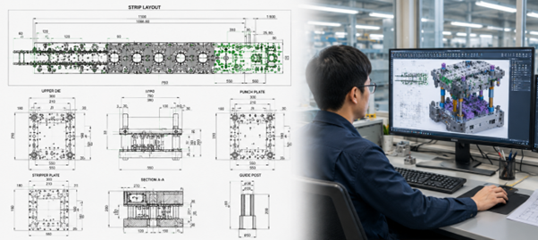
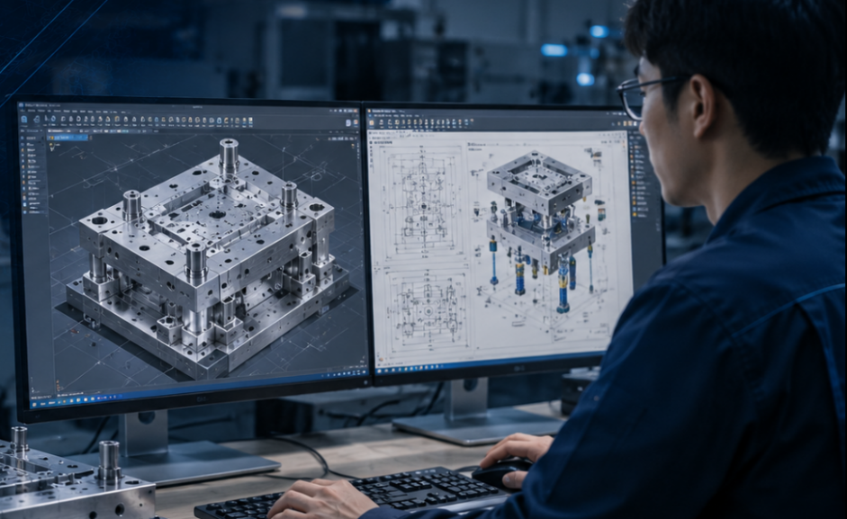
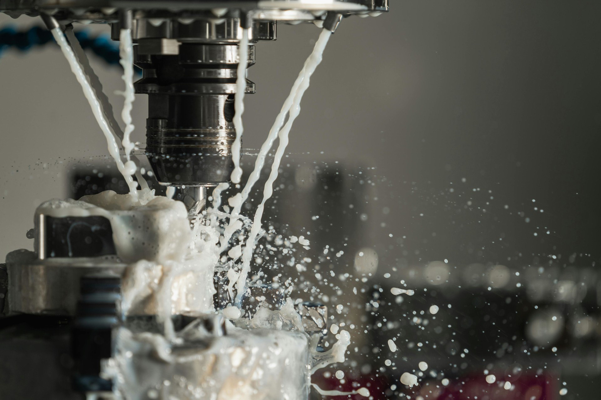
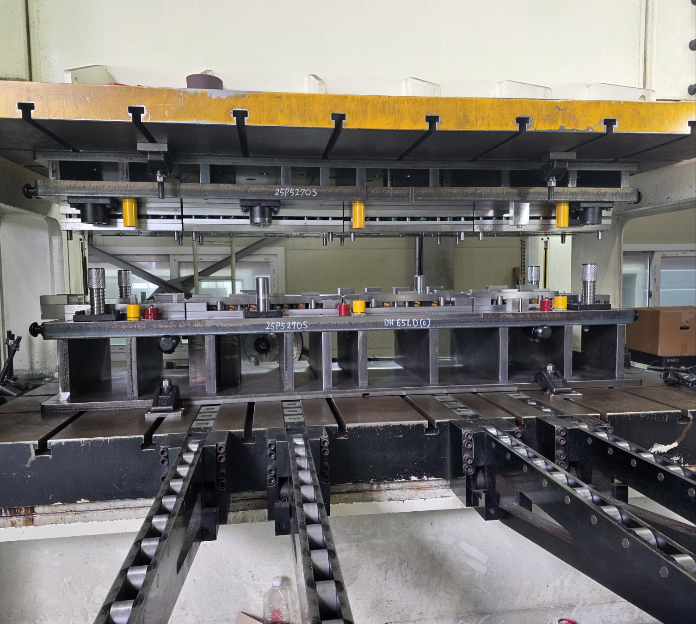
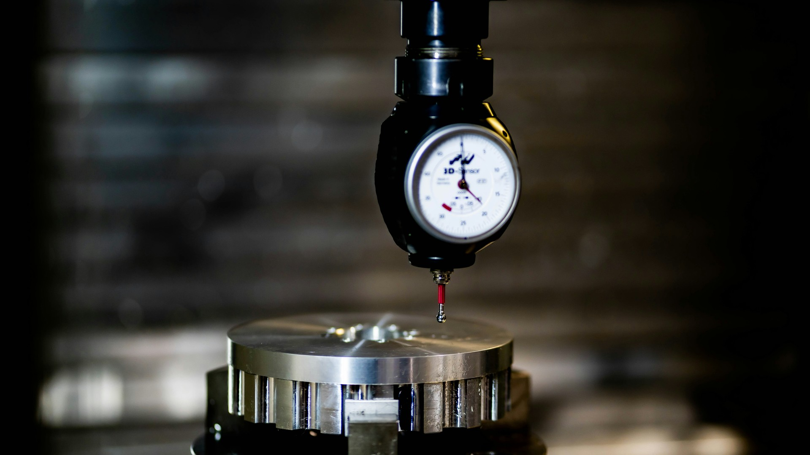
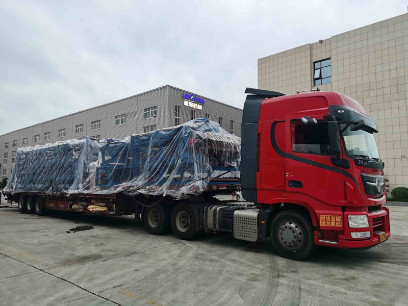

MANUFACTURING PROCESS
제작공정
HOME / 제작공정MANUFACTURING PROCESS
하나의 흐름으로 연결되는
금형 제작.
설계부터 납품 및 생산지원까지.
6단계 공정으로 금형 제작을 체계적으로 관리합니다.

01 / DESIGN제품 및 금형 설계
제품 요구사항과 생산 조건을 검토해 생산에 적합한 금형 구조를 설계합니다.
2D·3D 설계 / 공정 분석 / 금형 구조 설계 / 생산성 검토

02 / CAM PROCESSCAM 및 가공 데이터 생성
가공 경로를 최적화하고 CNC 설비에 사용할 프로그램을 준비합니다.
가공 경로 최적화 / 정밀 가공 데이터 생성 / CNC 프로그램 작업

03 / MACHINING정밀 가공
머시닝센터와 밀링·연삭·와이어 설비로 금형 부품을 정밀하게 가공합니다.
MCT 가공 / 밀링 가공 / 연삭 가공 / 와이어 가공

04 / ASSEMBLY금형 조립
가공된 부품을 조립하고 공차와 작동 상태를 확인합니다.
금형 조립 / 부품 정밀 조정 / 공차 확인 / 기능 점검

05 / TRY-OUT & QUALITYTRY-OUT 및 품질검사
시험 생산과 치수 검사로 제품 품질과 생산 안정성을 검증합니다.
시험 생산 / 제품 치수 검사 / 품질 검증 / 생산 안정성 확인

06 / DELIVERY & SUPPORT납품 및 생산지원
금형 납품 후 고객 생산라인에 안정적으로 적용되도록 기술지원과 유지보수를 제공합니다.
금형 납품 / 생산 대응 / 유지보수 지원 / 기술 대응